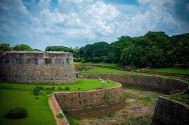
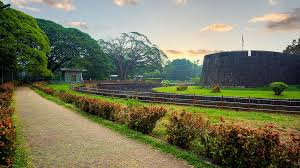
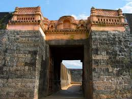
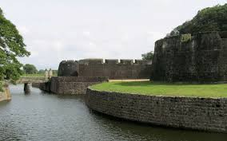

PALAKKAD

About Palakkad
Palakkad, also known as the **Gateway of Kerala**, is famous for its lush greenery, picturesque landscapes, and rich cultural heritage. It is home to **Palakkad Fort, Silent Valley National Park, and Malampuzha Dam**. The district is also known for its large-scale rice production.
Palakkad at a Glance
Famous For: Natural Beauty, Historical Forts, Hill Stations, Waterfalls
District: Palakkad
Best Season to Visit: September – February
Weather: Summer 27-38°C, Winter 22-30°C
How to Reach Palakkad
By Air
The nearest airport is **Coimbatore International Airport (CJB)**, located about **60 km** away.
By Train
Palakkad Junction (PGT) and Palakkad Town Railway Station are major railheads with excellent connectivity.
By Road
National Highway NH544 connects Palakkad with Coimbatore, Kochi, and other major cities.
Top Attractions in Palakkad
Palakkad Fort

Built by Hyder Ali in the 18th century, this **massive fort** is a must-visit historical landmark.
IMAGES GALLERY:






VIDEOS GALLERY:
Here is a vedio that might help you understand more;

Silent Valley National Park

A **UNESCO-listed biodiversity hotspot**, home to rare flora and fauna, including the endangered **Lion-tailed Macaque**.
IMAGES GALLERY:


VIDEOS GALLERY:
Here is a vedio that might help you understand more;

IMAGES:


YOUTUBE VIDEOS:
Check out this video:

Must-Try Restaurants in Palakkad
- Noorjahan Open Grill
- Aryaas
- Kapilavastu
- Bharath Hotel
Best Places for Shopping
- Palakkad Town Market
- Shankaranarayana Silks
- Joby’s Mall